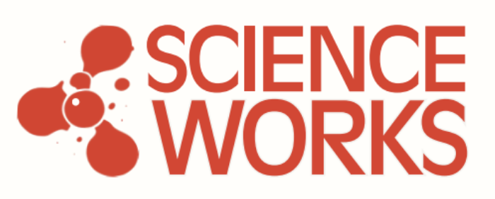

Science Works is a non-profit policy and research studio launching in June 2026.
We are building the organisational, technological, and intellectual infrastructure British science needs to stay at the frontier of discovery. We solve problems by building tools, creating communities, running experiments, and translating the resulting evidence into reform of the wider system.
Ben is Co-Director of Science Works. He is a former senior UK government adviser on science and R&D, having advised multiple administrations, and co-author of national-level science policies including the UK R&D Roadmap and UK Innovation Strategy. He was previously associate director at UKRI, has contributed to G7 open science frameworks, and builds data tools for research strategy. Ben is also Professor of Research and Innovation Policy at the University of Strathclyde.
Laura is Co-Director of Science Works. She was previously Senior Analyst in Science and Technology at the Tony Blair Institute, leading work on metascience, AI for science, and institutional models for R&D, and is lead author of the Lovelace Disruptive Invention Labs report. Laura is co-founder of the Better Science Project and a former Cambridge neuroscientist with a PhD in the field.
Will is a Researcher at Science Works, working on software toolbuilding. He is an AI for Health Researcher at Imperial College London, where he recently completed his PhD on machine learning systems to support antibiotic prescribing decisions. As an Encode Fellow at Oxford, he develops multi-agent AI scientist systems to generate, critique, and compare research strategies, using clinical research as a testbed. He founded Steward.ai, a clinical decision support tool now being clinically evaluated, and won the No.10 Generative AI Hackathon 2024 on biothreats detection. Will has published in Nature Communications and Nature Machine Intelligence, and holds an MPhil in Bioscience Enterprise from Cambridge and a BSc in Biochemistry from Imperial.
Rory is a Researcher at Science Works, working on software toolbuilding. He is an engineer and two-time founder, currently completing a PhD in computational neuroscience at Cambridge. He was previously a senior software engineer and is co-organiser of the CompMotifs ARIA Innovator Circle.
Alvin is a Researcher at Science Works, working on AI for Science and wider metascience delivery. He was co-founder of the Better Science Project and a strategy consultant at BCG, where he delivered transformation programmes across health, industry, and the public sector. He is a former Cambridge neuroscientist and PhD graduate.
Will is a Researcher at Science Works, working on science and innovation funding reform. He was previously Senior Policy Advisor for Science and Innovation at HM Treasury, where he led a team driving innovation-led growth policy across Whitehall and allocated more than £20bn in annual budgets. His focus is on funding reform, government-institutional architecture, and strategy.
Louise is a senior operations leader with extensive experience building and scaling mission-driven organisations. She has established core operating infrastructure for early-stage non-profits, serving as COO and leading the launch of a £17m programme portfolio. As a senior civil servant, she built the UK government's Office for Science and Technology Strategy, overseeing government-wide science and technology decision-making processes.
Anastasia is a policy expert, researcher, and author specialising in science, technology, and AI governance. She was previously Head of Science and Technology at the UK think tank The Entrepreneurs Network, and has since worked at the Royal Academy of Engineering in a policy delivery role.
Hope is a physicist and researcher specialising in experimental condensed matter, low-energy physics, and ultrafast optoelectronics. She is a postdoctoral researcher at the Max Planck Institute for the Structure and Dynamics of Matter in Germany, and is establishing the Integrated Quantum Materials lab at Boston College.
Alex is a staff writer at the Cosmos Institute. Before joining Cosmos, he was an editor at Works in Progress, a magazine focused on new and underrated ideas to improve the world. He previously held roles in venture capital and policy consultancy. Alex studied History at the University of Oxford and won an Emergent Ventures grant in 2024 to support Chalmermagne, his Substack on the intersection of policy, finance, and technology.
Lydia is Chief Technology Officer at Asothia, a startup building a platform matching researchers to funding and automating grant writing. She is also social and events curator at the Pharos Foundation, building community and connecting people across disciplines. Her background is in atmospheric chemistry and climate technology, and her interests lie at the intersection of scientific research, technology, and the systems that help researchers do their best work.
Eric runs FreakTakes, a Substack focused on the organisational infrastructure of scientific progress, producing 'administrative histories' of historically exceptional R&D organisations such as Bell Labs, early MIT, the Rockefeller Foundation, and DARPA. His work explores what made these labs unusually effective and what it would take to build their modern equivalents. Eric is a Fellow at the Good Science Project and works with ARIA UK and Renaissance Philanthropy on new R&D models. He has a degree in political science from Stanford and previously worked with economist Steve Levitt at the University of Chicago, where he developed his interest in the empirical literature on the economics of science and innovation.
Charlie is an AI scientist and PhD candidate at the University of Cambridge, working on geometric deep learning for structural biology and drug discovery. He is a leading contributor to the Boltz project, an open-source AI model for protein folding and molecular interaction prediction.
David is an independent researcher, engineer, and founding director of the Living Physics Lab. Backed by the UK's Advanced Research and Invention Agency (ARIA), his work merges theory, experiments, and engineering to understand how living cells learn, adapt, and compute.
Jennie is a PhD student at the Cambridge Institute for Medical Research (CIMR) and the UK Dementia Research Institute (UK DRI). Her research investigates the interplay between autophagy and neurodegeneration, combining cell biology, molecular biology and biochemistry to explore the molecular mechanisms of neurodegenerative diseases and potential therapeutic avenues. She also contributes to widening participation in science through public engagement and outreach activities.
Sehaj works with Not Boring, the media and venture studio founded by Packy McCormick, where he helped build Boring News, a Polymarket-sponsored project that turns prediction-market data into daily news analysis. His own work sits at the intersection of machine intelligence and computer systems, with a long-term interest in hardware. He is also building Wayfarers Space, a community for autodidacts learning across disciplines.
James is a former neuroscientist and policy expert who served as Special Adviser to the Prime Minister from 2020 to 2022. He is best known for helping architect the UK's Advanced Research and Invention Agency (ARIA) and for leading rapid COVID-19 testing initiatives.
Ben is an economist, researcher, and writer. He is co-founder and editor of the magazine Works in Progress, which now operates as part of Stripe Press, and has held roles at the Adam Smith Institute, Policy Exchange, and Create Streets.
Helen is Head of Innovation, Analysis and Public Affairs at the Royal Academy of Engineering, where she has been shaping UK research and innovation policy for over a decade. Her expertise spans emerging technologies, entrepreneurship, R&D investment, and research culture. Helen has also worked in the civil service on science and technology policy, and previously as an academic in molecular microbiology.
Jeegar leads the Defence & Industrials team at Stonehaven & Public First. He was previously Director of Government Innovation at the Tony Blair Institute for Global Change, and his career spans roles at Jaguar Land Rover, the Social Market Foundation, the Brookings Institution, and Chief Economist at ADS Group.
Jacqueline is a Schmidt Science Fellow and interdisciplinary scientist with an unconventional career path. After years as a tube driver and social care worker, she took evening classes in astrophysics and earned a First-Class BSc in Earth and Ocean Science from Brighton. Her UCL PhD in Space and Climate Physics searched for life on Mars. As a Schmidt Fellow at Oxford, she investigated ocean acidification using remote sensing satellites, then worked in drug discovery and science entrepreneurship startups. She co-founded Asterisk Labs, the UK's first worker-owned co-operative research laboratory, combining deep learning, Earth observation and climate science with open-source outputs.
Sarah is a UK higher education professional specialising in research policy and academic-policy engagement. She is Director of Strategy & Policy and Joint Chief of Staff for UCL Research, Innovation and Global Engagement, and Co-Chair and Director of Programmes for the Universities Policy Engagement Network.
Sam is an economist and policy analyst, currently Head of Publishing at Stripe and founding editor of Works in Progress. He is best known for co-authoring the influential 2021 essay 'The Housing Theory of Everything', and previously served as Executive Director of the Adam Smith Institute.
Stuart is Executive Director of the Good Science Project, a non-profit think tank dedicated to making federal science funding more innovative and streamlined. He has spearheaded over $60 million in grants to improve scientific reproducibility and transparency, and previously served as Vice President of Research at Arnold Ventures.
Saloni is a science writer, researcher, and co-founder of Works in Progress. She works on data-driven journalism in global health, meta-science, and medical innovation, and holds a PhD in psychiatric genetics from King's College London and the University of Hong Kong.
Anastasia is co-founder and President of Convergent Research, a non-profit organisation that pioneers and scales the Focused Research Organization (FRO) model. She sits on the boards and advises various scientific and public-good organisations, including Forest Neurotech, EvE Bio, Cultivarium, Dragonfly, [C]Worthy, and the Unitary Fund.
Tom is CEO of Renaissance Philanthropy. He previously led innovation at Schmidt Futures. Tom served in the White House under Presidents Obama and Clinton, helping design and launch major science and technology initiatives, including the National Nanotechnology Initiative, the BRAIN Initiative, the Next Generation Internet, and programmes in data science, robotics, commercial space, and advanced materials. His team worked with the Senate to give every federal agency authority to support incentive prizes of up to $50 million. From 2001 to 2008, he was Special Assistant to the Chancellor for Science and Technology at UC Berkeley, where he launched Big Ideas@Berkeley.
Ronit is Managing Director at Renaissance Philanthropy, and was previously Director of Partnerships at Schmidt Futures. Recognised on the Forbes 30 Under 30 Asia list, he co-founded Empower Energy, an enterprise that brings renewable energy to rural communities in India.
Paul is Professor of Strategy and Associate Dean of Research at the University of Sussex Business School, based at SPRU (Science Policy Research Unit). Originally trained as a chemist, his work focuses on technical change, innovation systems, and the governance of complex and security-relevant technologies. He has contributed to research on biosecurity, dual-use science, and the implications of emerging technologies for the chemical and biological weapons prohibition regimes. His broader interests include industrial dynamics, metascience, financial innovation, and the management of uncertainty in major R&D and transformational projects. Paul is also acting Director of the Harvard Sussex Program.
Benedict is Chief AI & Innovation Officer at the Tony Blair Institute for Global Change, where he leads policy work across technology, the economy, climate, health, and geopolitics. His focus is on AI policy and how governments adapt to fast-moving technology. He began his career as an economist at HM Treasury during the financial crisis, before working in finance, in a Prime Minister's Office in Southeast Asia and in President Kagame's Office in Rwanda. Benedict led the influential New National Purpose report series, co-authored with Tony Blair and Lord Hague, and writes extensively on artificial intelligence, biotechnology and clean technology.
Rob is Professor of Aerothermal Technology and Director of the Whittle Laboratory at the University of Cambridge, and Director of the Rolls-Royce University Technology Centre. His research targets emissions in aviation and power generation. His pioneering work on Rapid Technology Development has cut R&D timelines from years to months, and he is leading a new Whittle Laboratory to accelerate the journey from research to engineering application. Rob founded the Aviation Impact Accelerator, which develops evidence-based tools for net zero aviation. He is a Fellow of the Royal Academy of Engineering and serves on the Department for Transport's Science Advisory Council.
James is Executive Director of the Research on Research Institute (RoRI), and Professor of Research Policy at UCL's Department of Science, Technology, Engineering and Public Policy (STEaPP). RoRI's consortium spans 15 countries and includes funders investing over $25 billion in R&D each year. A transdisciplinary social scientist, James has been active in UK and international science policy since the late 1990s, with academic posts at Sheffield, Sussex and Lancaster, and roles including Director of Science Policy at the Royal Society. He chaired the 2015 review of research metrics published as The Metric Tide.